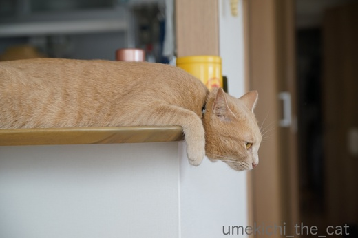
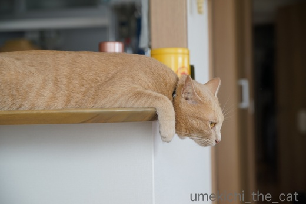

くつろぎポーズ色々 [梅吉]
おくつろぎ中の梅吉さん。

もう少し楽な姿勢がありそうなものですがこれはこれで良い感じみたいです。

これも良く見る首を突き出したポーズ。ぐえっとなっていそうですが大丈夫な様です。

そして一番のくつろぎポーズと言えるのが両手を突き出したこのかたち。

しょっちゅうこのポーズのまま寝てしまいます。

ワンハンドも有りww

手を前にびょ〜んと伸ばして

おやすみなさ〜い。
手を前に伸ばすと気持ちが良いのでしょうか。
ニンゲンだと「あ〜、腰が伸びて気持ちが良い！」みたいな感覚？
羽を伸ばしてくつろぐ、と言いますが梅吉は手を伸ばしてくつろぎます＾＾
にゃんこの皆さん、本当にそれでくつろいでる？というポーズがそれぞれにありそうですね。
 ↑ガブッと一押し↑
↑ガブッと一押し↑
このポーズに説明は必要ないですね。
くつろぎ以外の何を表現しているというのでしょう^^;
![[猫]](https://blog.ss-blog.jp/_images_e/101.gif) かぜのおとが えらいことになっとる。 でもわしはへいきやでー。
かぜのおとが えらいことになっとる。 でもわしはへいきやでー。
一旦雨の止み間があったのですが、14時過ぎから風と雨が強くなって来ました。
会社から指示がありおっとも帰宅。
近くの市町村でも避難指示が出ている様です。
「避難所開設。場所は〇〇。」とテレビにテロップが流れて来てびっくりです。
足の遅い台風で雨風の時間が長引きそうですが大きな被害が出ませんように！

もう少し楽な姿勢がありそうなものですがこれはこれで良い感じみたいです。

これも良く見る首を突き出したポーズ。ぐえっとなっていそうですが大丈夫な様です。

そして一番のくつろぎポーズと言えるのが両手を突き出したこのかたち。

しょっちゅうこのポーズのまま寝てしまいます。

ワンハンドも有りww

手を前にびょ〜んと伸ばして

おやすみなさ〜い。
手を前に伸ばすと気持ちが良いのでしょうか。
ニンゲンだと「あ〜、腰が伸びて気持ちが良い！」みたいな感覚？
羽を伸ばしてくつろぐ、と言いますが梅吉は手を伸ばしてくつろぎます＾＾
にゃんこの皆さん、本当にそれでくつろいでる？というポーズがそれぞれにありそうですね。
このポーズに説明は必要ないですね。
くつろぎ以外の何を表現しているというのでしょう^^;
一旦雨の止み間があったのですが、14時過ぎから風と雨が強くなって来ました。
会社から指示がありおっとも帰宅。
近くの市町村でも避難指示が出ている様です。
「避難所開設。場所は〇〇。」とテレビにテロップが流れて来てびっくりです。
足の遅い台風で雨風の時間が長引きそうですが大きな被害が出ませんように！

カフェオレ色の梅吉

梅吉 2023年8月10日 永眠


梅吉と出会った譲渡会

犬猫の理由なき殺処分ゼロ
妄想広告
UMEKICHI 光

爆発的に早い！
時々攻撃的！
Thanks to Mr.Boss365
爆発的に早い！
時々攻撃的！
Thanks to Mr.Boss365

わーい、一番乗りだ！
暑いと行き倒れ感がすごいですよねー。
台風気をつけてくださいね！
by じゅらまろ (2017-08-07 17:08)
ノビノビしたポーズが萌えますね！台風だんだん酷くなりましたね
by みぃにゃん (2017-08-07 17:24)
体が柔らかいので大丈夫なのでしょうか（笑
ほんとにそれ楽チン？？って思う寝ていることって
ありますよね(*^_^*)
ノビノビした寝方が一番気持ち良いのですね！
by きぃ (2017-08-07 17:42)
猫のこういう姿が一番好きです(^^♪
思わず微笑んでしまいます。
ノビの仕方に個性が出ますね。
うちは本当にだらしないノビをします(^-^;
by riverwalk (2017-08-07 18:41)
梅吉さんのダブルハンド顔埋め型のくつろぎポーズは秀逸ですね♪
美しい～(*^▽^*)
ちょうど午後2時過ぎに外にいて大雨に合いました。
夫さんの会社、いい会社ですね。
相方は「地下鉄は動いてるから」という理由で、定時退社でした^^;
by ゆきち (2017-08-07 20:24)
梅吉さん、伸びをしたまま寝ちゃったのですね！
楽な体勢なのですね(^^)
by ma2ma2 (2017-08-07 20:28)
やっぱりお手手びょーんのポーズが最高です。これは梅吉さんの決めポーズですね。
by zombiekong (2017-08-07 20:53)
おやすみなさ〜いのポーズに癒されますね♪ ^^)
今回の台風、しぶといですねー。
台風もしぶといけれど、こんな悪天候でも通常運転している
新幹線も、良い意味でしぶといなあと思います。^^)
by yes_hama (2017-08-07 22:17)
ノビノビしていますね〜
綺麗なスライディング体勢。
そして、気持ちよさそうに目を閉じる梅吉さんでした。
我が家の娘も2時前に帰宅しました。
トラックがひっくり返ったり、被害が出ていますね。
台風5号、早足で通り過ぎてほしいです。
by kiki (2017-08-07 23:11)
猫の寝姿が大好きです。
吃驚するような姿勢で、すやすや寝ていますよね。
寝姿で笑わせてくれる猫、は偉大です（笑）
by うめむす (2017-08-08 00:47)
なんでそれなの？って格好で寝ますね。
両手を伸ばしたポーズは気持ち良さそう＾＾
by ぽちの輔 (2017-08-08 07:05)
先生、最初セーフで最後がアウトでした。
by KENT0mg (2017-08-08 09:41)
その姿勢は気持ちよくないと思うんだけど～って思う姿勢で
気持ちよさそうに寝てることありますよねー(笑)
梅吉君もおてては前に伸びるのね^^
のび～～～～～ってしてて気持ちいいんだろうな^^
by リュカ (2017-08-08 09:54)
くつろいでリラックスしているのに。
人から見たら「んっ!?」って二度見したくなるような恰好をしていることが
良くありますよね。
1枚目の梅吉くん。座布団運びの合間の山田君みたいだし～。
(笑点の座布団運びは今も山田君なのかな？)
リラックスポーズ1つで色々と想像しちゃう～。
家も色々あるよ。カッコいいのから笑えるのまで(^-^)
台風。近所の市町村で避難指示が出ていたら怖くなっちゃうよね。
大丈夫だったかな？
by emi (2017-08-08 10:24)
梅吉さん、両腕伸ばしのまま寝てる姿が可愛い(^O^)
にゃんこって「はい？」って姿で寛ぐ子多いですよねぇ^^;
体の硬い私が真似をしたら救急車のお世話になるに違いないですｗ
by ニッキー (2017-08-08 12:20)
じゅらまろさん＞エアコンの冷気の届く場所に居れば良いのに
わざわざ暑い部屋で行き倒れていることがよくありますよね^^;
我が家付近、台風はあっけないほど静かに過ぎて行きましたよー。
みぃにゃんさん＞ニンゲンにどう見えようと本ニャンが気持ちがよければ
OKですよね＾＾
昨夜の台風、みぃにゃんさんのお家付近は避難勧告が出た地域もあったのでは？
２〜３日は川も増水していそうです。お散歩気をつけてくださいね！
きぃさん＞首が９０℃くらい曲がっているときは思わず
姿勢を直したりしてウザがられています^^;
伸びているときはどんなにひねりが入っていても気にならないんですけどねーww
riverwalkさん＞猫が伸びているとふっと肩の力が抜けますよね〜＾＾
だらしなければだらしないほどノビはかわいい！
ユキちゃん？モモちゃん？見てみた〜い＾＾
ゆきちさん＞ダブルの手はきっちり指先まで伸ばすのが梅吉のこだわりの様です＾＾
採点競技だったら加点をあげたくなりますよー。
相方さん、定時退社ならちょうど雨脚＆風がピークの頃だったのでは？
びしょ濡れで帰宅されたのではないでしょうか。お疲れ様です！
早く帰って来た猫父さんにこてつくんも大喜び！？
ma2ma2さん＞リラックスすると手が伸びちゃう様ですね〜＾＾
そう言えば私もバンザイして寝ている時がありますわww
zombiekongさん＞そう！決めポーズはお手手びょーん、
キメ顔は白目で〜すＯ(≧▽≦)Ｏ
yes_hamaさん＞お手手の間に顔を埋めて
ほんっとうに気持ち良さそうに寝ていました＾＾
昨日は新幹線頑張っていましたよね！
日本人の勤勉さゆえなのでしょうか。
kikiさん＞美しい姿勢でしょうＯ(≧▽≦)Ｏ
両手をきっちり伸ばすのが梅吉流。。
台風は一時雨風が強まりましたが夜には普通の雨になっていました。
川が氾濫した地域もある様子。
これ以上の被害がなければ良いのですが・・・・・
うめむすさん＞そうそう＾＾寝ているだけでホッとさせてくれたり
笑わせてくれたり・・・猫って偉大な生き物です！
ゆえ、下僕が増え続けるという・・・(^▽^;)
ぽちの輔さん＞あまりにも苦しげなポーズなので直そうと手を出すと
ものすごく迷惑そうな顔されますよね^^;
手を伸ばすと気持ちが良い・・・梅吉、手の筋が凝っているのだろうか・・・
KENT0mgさん＞え〜〜〜！残念〜〜！！
静止画だからビデオ判定は要求できないし・・・・・
次はオールセーフを目指しますわwwwww
リュカさん>手も前へ！何事も前へ！！梅吉前向きなのよーーー(*>艸<)
変な姿勢を直してあげようとすると迷惑そうな顔あるいは
ガブガブケリケリされるのよ(꒦ິ⌑꒦ີ)
emiさん＞ぱっと見では理解できない寝姿ありますあります！
え？？って二度見(*>艸<)
笑点、2年くらい前かな？偶然見たらまだ山田くんだったな・・・
今はもう司会が歌丸さんですらなくなってしまって。。
時の流れを感じるわ〜〜〜。
とりあえず梅吉は座布団運びから昇格して座布団もらえる方をめざします！！
結構もらえると思うのよねー(*>艸<)
台風は川をはさんだ隣の市にまで避難所が開設されたりしたのですが
我が家付近からは静かに過ぎて行きました。
心配してくれてありがとうm(_ _)m
ニッキーさん＞ダブルハンドの両手伸ばし、梅吉の決めポーズに決定です(^_－)☆
あはは、ニッキーさん体が硬いのですね〜。
私はニッキーさんよりは柔らかいと思うのですが・・・・・
仮に私がにゃんこのようなポーズを取っても
可愛くもなんともないと思われること間違いなしです(^▽^;)
by ちぃ (2017-08-08 17:46)
両手を伸ばして寛ぐ姿が特に可愛いですね。気持ちが解るような感じです。
by 水郷楽人 (2017-08-08 19:57)
身体、柔らかいですにゃあ♪
うふふ、あるある！おくつろぎポーズ＾＾
両手をこんなにビョーンと伸ばしてるの、よくやるのは珍しいかも？
ぺったり伸びちゃってぇ気持ちよさそうで、かわいい～＾＾
開きねじりは、ストレッチになるのかな～＾＾
by sana (2017-08-09 00:14)
ズサーッて感じで寝てますね。かわいいわ梅吉くん(^^♪
梅吉くんお腹に白い毛があるのかしら?ナノもその辺白いんですよ～(´∀｀*)ﾎﾟｯ
by palpal (2017-08-09 14:38)
無防備こそ愛の証♡
理屈なしで(*´ｪ`*)ﾎﾟｯ
梅ちゃんは和テイストの「藍」も似合うのね～。シブイ男に成長する予感！
by Ginger (2017-08-09 17:07)
水郷楽人さん＞本当によくこのポーズをするので梅吉にとって楽な姿勢なのでしょうね＾＾
ニンゲンもバンザイして寝ると気持ち良いですよね〜。
え？しませんか？？私だけ・・・・^^;
sanaさん＞いろんなくつろぎポーズがありますが梅吉にはこのポーズが
特に気持ちが良さそうなんですよ〜。
手を触っても引っ込めたりしないので
「おてて、長いね〜」と言いながらひたすらなでなで＾＾
palpalさん＞ぷぷぷ(*>艸<)梅吉は白パンツ〜♪
ナノくんも白パンツなのね！正しい日本男児Ｏ(≧▽≦)Ｏ
Gingerさん＞へんてこなポーズは緊張していたら出来ませんよね＾＾
心を開いて安心してもらっているのねー！うれしい！！
「和」の似合う渋い男、そのうち作務衣に挑戦してみようかしら・・・(〃ω〃)
by ちぃ (2017-08-10 16:03)